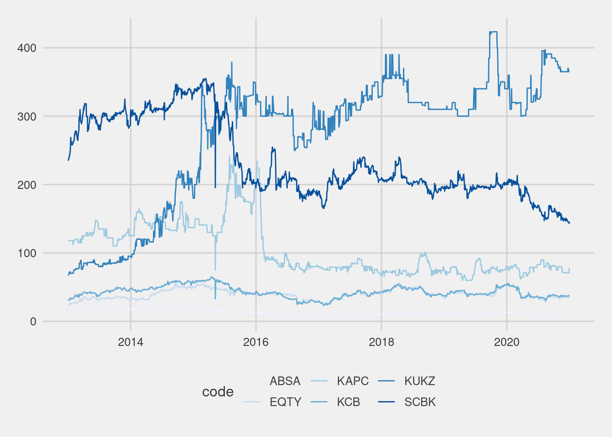

Code
if(!require(pacman)){
install.packages("pacman")
}
pacman::p_load(tidyverse)
#if(!require(artyfarty)){
#}
theme_set(ggthemes::theme_fivethirtyeight())if(!require(pacman)){
install.packages("pacman")
}
pacman::p_load(tidyverse)
#if(!require(artyfarty)){
#}
theme_set(ggthemes::theme_fivethirtyeight())my_files <- list.files(path = "data/",
pattern = "stocks_\\d{4}\\.csv$",
full.names = TRUE,
recursive = TRUE)
full_data <- map_dfr(my_files, read_csv) |>
janitor::clean_names() |>
mutate(date = lubridate::dmy(date))
head(full_data)# A tibble: 6 × 13
date code name x12m_low x12m_high day_low day_high day_price previous
<date> <chr> <chr> <dbl> <dbl> <dbl> <dbl> <dbl> <dbl>
1 2013-01-02 EGAD Eaaga… 8.2 14 25 25 25 25
2 2013-01-02 KUKZ Kakuz… 300 424. 67.5 67.5 67.5 72
3 2013-01-02 KAPC Kapch… 59 95 118 118 118 118
4 2013-01-02 LIMT Limur… 385 475 430 430 430 430
5 2013-01-02 SASN Sasin… 14.8 19.6 11.7 12.0 11.9 11.7
6 2013-01-02 WTK Willi… 92 165 200 200 200 200
# ℹ 4 more variables: change <chr>, change_percent <chr>, volume <chr>,
# adjust <chr>full_data %>%
filter(code %in% c("KCB", "ABSA", "EQTY", "SCBK", "KUKZ", "KAPC")) |>
ggplot(mapping = aes(x = date, y = day_price, color = code)) +
geom_line() +
scale_color_brewer()